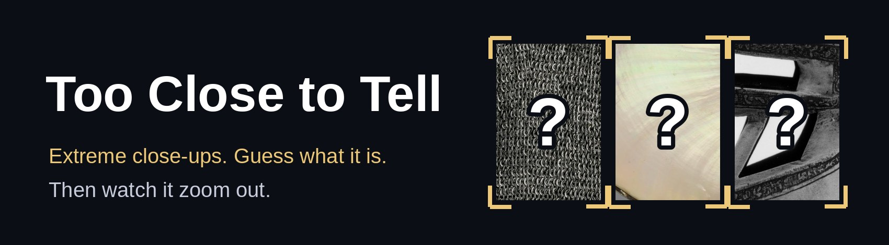

Extreme close-ups. Can you tell what it is?
Too Close to Tell is a YouTube channel of short guessing games. Every video starts so close that you can't tell what you are looking at: rings of metal, a pearly glow, a strange curl of wood. The camera slowly pulls back, a countdown runs, and then it zooms all the way out to reveal the real thing, from centuries-old armor to rare instruments and curious treasures.
Watch on YouTube: @too-close-to-tell
How it is made
The videos are generated automatically by a small open-source program (github.com/2000Re/too-close-to-tell). Photographs and object information come from the Open Access collection of The Metropolitan Museum of Art (CC0). The channel is not affiliated with the museum. Narration is generated with Google Cloud Text-to-Speech.